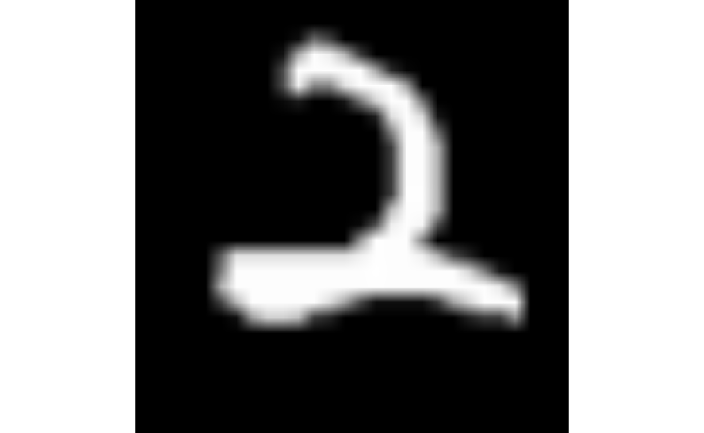
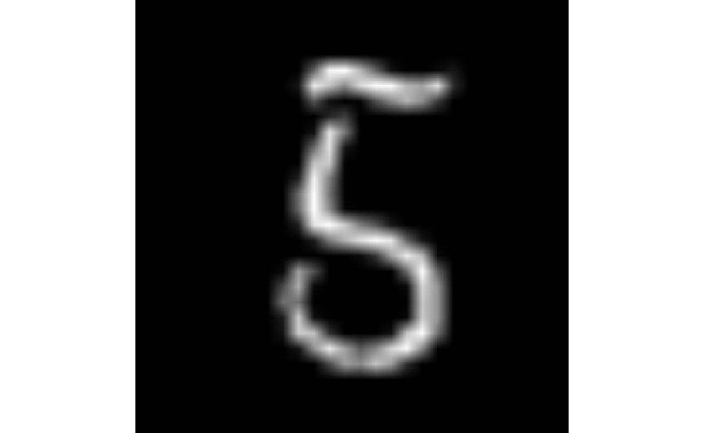
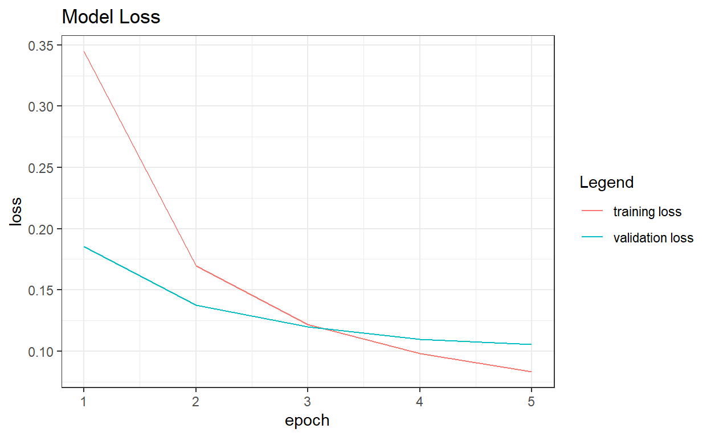
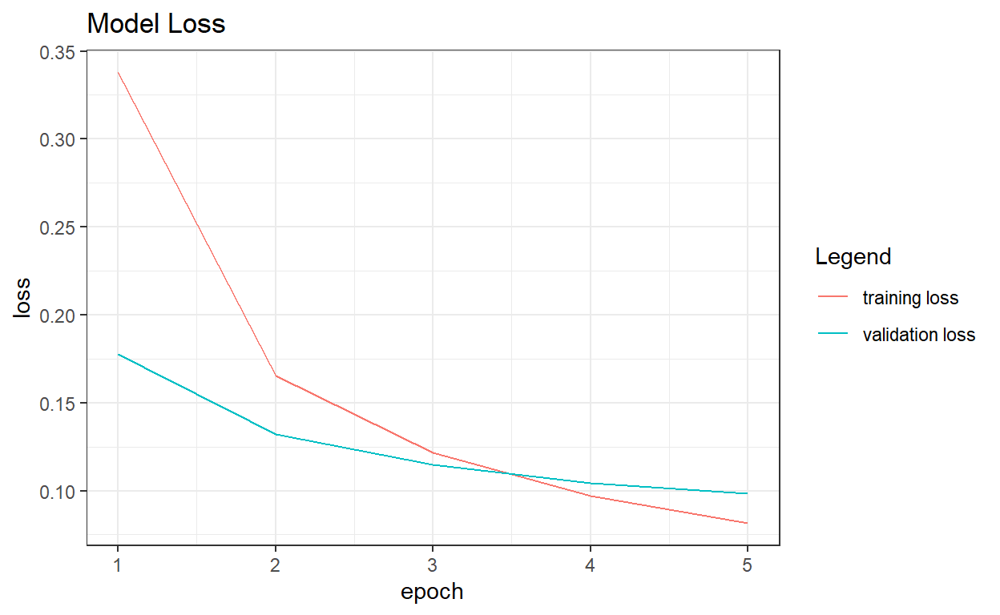
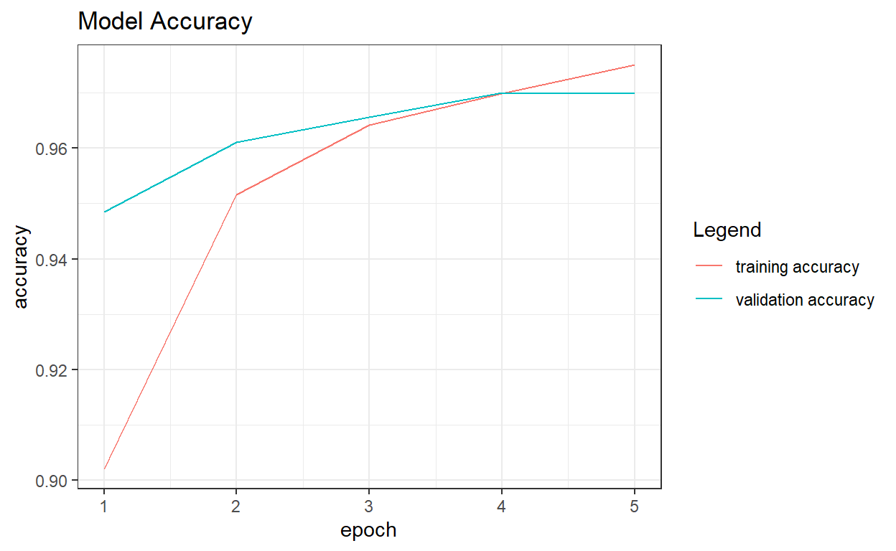
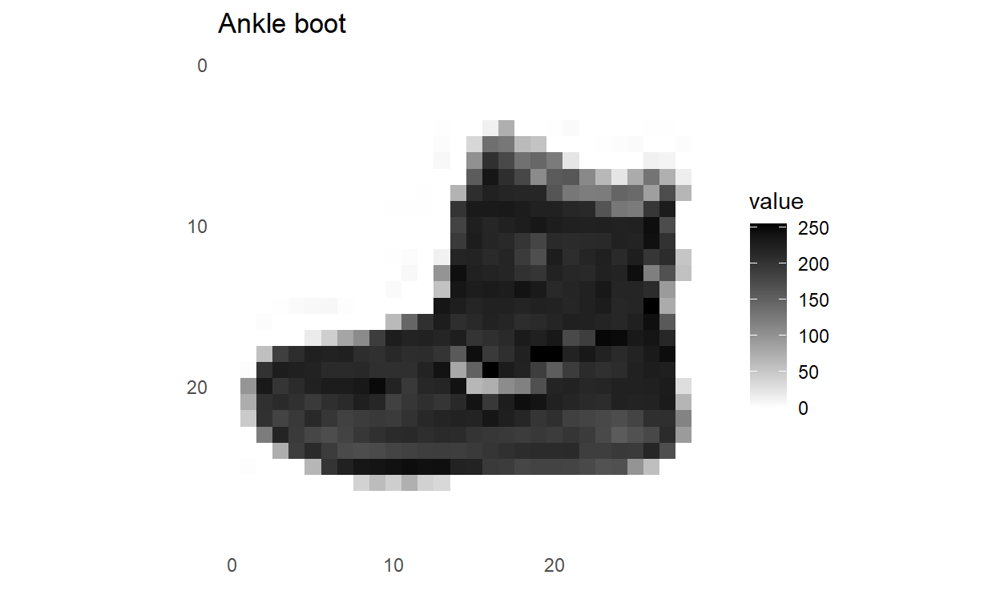

In this post we will explore image classification in keras for several datasets and how transfer learning can be readily applied to improve well known models.
Computer vision as a sub-field of deep learning has exploaded over the last decade. The advent of better computers, readily available data sources, and explosively intelligent models with very little code has made the unthinkable doable, and quickly.
First we will grab the MNIST dataset. This consists of an array of 28x28 images with 10 classification labels.
mnist %>% names[1] "train" "test" We can save the shapes and number of classes for later.
# Get the width and height
WIDTH = dim(mnist$train$x)[[2]]
HEIGHT = dim(mnist$train$x)[[3]]
# Get unique number of classes
CLASSES = length(unique(mnist$train$y))
mnist$train$x %>% dim[1] 60000 28 28mnist$train$y %>% dim[1] 60000mnist$test$x %>% dim[1] 10000 28 28mnist$test$y %>% dim[1] 10000Next we can visualize a few images using the plot
function in r. This was a little weird at first, because the images
sometimes need standardized for rgb values depending on the function and
data shape.
library(raster)
plot_a_few <- function(x,y, a_few = 3, rgb_dim=FALSE){
# Render a few images
rand_image_index = sample(1:dim(x)[[1]], size = a_few)
par(mar=c(0, 0, 0, 0))
for(i in rand_image_index){
if(rgb_dim){
img = x[i,,,]
}
else{
img = x[i,,]
# image(img, useRaster=TRUE, axes=FALSE)
}
plot(as.raster(img))
label = y[i]
print(label)
}
}
plot_a_few(mnist$train$x, mnist$train$y, a_few=3)[1] 3
[1] 2
[1] 9The simplest model will take the image tensor and flatten it into the
standard feed forward format. The prediction is over our
CLASSES which is 10.
# Simple model
model <- keras::keras_model_sequential() %>%
keras::layer_flatten(input_shape = c(WIDTH, HEIGHT),
name = "mnist_flatten_input") %>%
keras::layer_dense(units = 128, activation = "relu",
name = "mnist_dense") %>%
keras::layer_dropout(0.2, name = "mnist_dropout") %>%
keras::layer_dense(CLASSES, activation = "softmax",
name = "mnist_dense_output")
modelModel: "sequential"
______________________________________________________________________
Layer (type) Output Shape Param #
======================================================================
mnist_flatten_input (Flatten) (None, 784) 0
______________________________________________________________________
mnist_dense (Dense) (None, 128) 100480
______________________________________________________________________
mnist_dropout (Dropout) (None, 128) 0
______________________________________________________________________
mnist_dense_output (Dense) (None, 10) 1290
======================================================================
Total params: 101,770
Trainable params: 101,770
Non-trainable params: 0
______________________________________________________________________# Some summary statistics
base::summary(model)Model: "sequential"
______________________________________________________________________
Layer (type) Output Shape Param #
======================================================================
mnist_flatten_input (Flatten) (None, 784) 0
______________________________________________________________________
mnist_dense (Dense) (None, 128) 100480
______________________________________________________________________
mnist_dropout (Dropout) (None, 128) 0
______________________________________________________________________
mnist_dense_output (Dense) (None, 10) 1290
======================================================================
Total params: 101,770
Trainable params: 101,770
Non-trainable params: 0
______________________________________________________________________Reminder that sparse_categorical_crossentropy is for
non-matrix like y values. This will do it for you.
Otherwise, you need to use the to_categorical function to
transform the y vector into a matrix.
plot_history_metrics = function(history){
# Plot fit results - loss and accuracy for this model
tmp = data.frame(history$metrics) %>% dplyr::mutate(epoch = row_number())
plt1 = ggplot(data=tmp) +
geom_line(aes(x=epoch, y = loss, color="training loss")) +
geom_line(aes(x=epoch, y = val_loss, color="validation loss")) +
theme_bw() +
labs(color="Legend") +
ggtitle("Model Loss")
plt1
plt2 = ggplot(data=tmp) +
geom_line(aes(x=epoch, y = accuracy, color="training accuracy")) +
geom_line(aes(x=epoch, y = val_accuracy, color="validation accuracy")) +
theme_bw() +
labs(color="Legend") +
ggtitle("Model Accuracy")
plt2
list(loss_plot = plt1, acc_plot = plt2)
}
plot_history_metrics(history)$loss_plot
$acc_plotAnother equally valid way as oppose to flattening the input as an
array is to do it explicitely on the outside. This can be done use the
array_reshape function. We can also make our y values into
a categorical matrix using the to_Categorical function.
This will change our sparse_categorical_crossentropy into
categorical_crossentropy. A tricky distinction, but one
doesnt expect a matrix, one does.
x_train <- keras::array_reshape(mnist$train$x, c(nrow(mnist$train$x), WIDTH*HEIGHT))
x_test <- keras::array_reshape(mnist$test$x, c(nrow(mnist$test$x), WIDTH*HEIGHT))
y_train <- keras::to_categorical(mnist$train$y, 10)
y_test <- keras::to_categorical(mnist$test$y, 10)
x_test %>% dim[1] 10000 784y_test %>% head [,1] [,2] [,3] [,4] [,5] [,6] [,7] [,8] [,9] [,10]
[1,] 0 0 0 0 0 0 0 1 0 0
[2,] 0 0 1 0 0 0 0 0 0 0
[3,] 0 1 0 0 0 0 0 0 0 0
[4,] 1 0 0 0 0 0 0 0 0 0
[5,] 0 0 0 0 1 0 0 0 0 0
[6,] 0 1 0 0 0 0 0 0 0 0# Model pre-flattened for shape and made categorically long in y
model <- keras::keras_model_sequential() %>%
keras::layer_dense(input_shape = c(WIDTH*HEIGHT),
units = 128,
activation = "relu",
name = "mnist_dense") %>%
keras::layer_dropout(0.2,
name = "mnist_dropout") %>%
keras::layer_dense(CLASSES,
activation = "softmax",
name = "mnist_dense_output")
modelModel: "sequential_1"
______________________________________________________________________
Layer (type) Output Shape Param #
======================================================================
mnist_dense (Dense) (None, 128) 100480
______________________________________________________________________
mnist_dropout (Dropout) (None, 128) 0
______________________________________________________________________
mnist_dense_output (Dense) (None, 10) 1290
======================================================================
Total params: 101,770
Trainable params: 101,770
Non-trainable params: 0
______________________________________________________________________# Model architectures
base::summary(model)Model: "sequential_1"
______________________________________________________________________
Layer (type) Output Shape Param #
======================================================================
mnist_dense (Dense) (None, 128) 100480
______________________________________________________________________
mnist_dropout (Dropout) (None, 128) 0
______________________________________________________________________
mnist_dense_output (Dense) (None, 10) 1290
======================================================================
Total params: 101,770
Trainable params: 101,770
Non-trainable params: 0
______________________________________________________________________Once we configure our model, we can compile it,
fit, then plot to see the performance. Turns
out, you can just do plot(history) and the function to plot
these metrics is entirely superfluous.
plot_history_metrics = function(history){
# Plot fit results - loss and accuracy for this model
tmp = data.frame(history$metrics) %>% dplyr::mutate(epoch = row_number())
plt1 = ggplot(data=tmp) +
geom_line(aes(x=epoch, y = loss, color="training loss")) +
geom_line(aes(x=epoch, y = val_loss, color="validation loss")) +
theme_bw() +
labs(color="Legend") +
ggtitle("Model Loss")
plt1
plt2 = ggplot(data=tmp) +
geom_line(aes(x=epoch, y = accuracy, color="training accuracy")) +
geom_line(aes(x=epoch, y = val_accuracy, color="validation accuracy")) +
theme_bw() +
labs(color="Legend") +
ggtitle("Model Accuracy")
plt2
list(loss_plot = plt1, acc_plot = plt2)
}
plot_history_metrics(history)$loss_plot
$acc_plot
# Generate some predictions on the unseen data
predictions = stats::predict(model, x_test)
predictions %>% head() [,1] [,2] [,3] [,4] [,5]
[1,] 2.227834e-07 1.146102e-07 3.779165e-06 8.758837e-04 3.697259e-09
[2,] 8.023340e-08 2.998142e-05 9.999614e-01 6.299148e-06 1.639815e-13
[3,] 2.070014e-07 9.994919e-01 3.830419e-05 3.406002e-06 4.921339e-05
[4,] 9.996891e-01 2.887514e-08 1.701280e-05 6.713914e-08 3.676894e-08
[5,] 7.651256e-07 1.150332e-11 3.691493e-07 4.230928e-09 9.981548e-01
[6,] 2.478353e-09 9.999220e-01 4.330399e-07 1.326177e-07 7.487398e-07
[,6] [,7] [,8] [,9] [,10]
[1,] 2.292366e-07 3.003187e-12 9.991176e-01 1.755072e-07 2.135613e-06
[2,] 1.473648e-07 5.765563e-08 5.105388e-11 2.201943e-06 1.194979e-12
[3,] 6.619522e-06 3.123074e-06 3.831029e-04 2.146841e-05 2.597842e-06
[4,] 3.171424e-07 3.722662e-07 2.930266e-04 6.135127e-09 4.965008e-08
[5,] 2.048299e-08 1.496129e-06 1.140888e-04 7.702196e-07 1.727599e-03
[6,] 3.147493e-08 4.829987e-09 7.620423e-05 3.231777e-07 1.556567e-07# Evaluate performance
# test_results = model %>%
# evaluate(mnist$test$x, mnist$test$y, verbose = 0)
# test_resultsOne thing keras makes incredibly easy is the ability to save your model. This will create a folder and allow for easy access to and from your model if you need it for predictions in another environment or API.
# Serialize the model (it becomes a folder)
keras::save_model_tf(object = model, filepath = "mnist_model")# Reload the model
reloaded_model = keras::load_model_tf("mnist_model")
reloaded_model %>% summaryModel: "sequential_1"
______________________________________________________________________
Layer (type) Output Shape Param #
======================================================================
mnist_dense (Dense) (None, 128) 100480
______________________________________________________________________
mnist_dropout (Dropout) (None, 128) 0
______________________________________________________________________
mnist_dense_output (Dense) (None, 10) 1290
======================================================================
Total params: 101,770
Trainable params: 101,770
Non-trainable params: 0
______________________________________________________________________[1] TRUERecognizing other types of objects is just as easy as before. Lets repeat our steps for a new dataset, because practice makes perfect!
fashion_mnist <- dataset_fashion_mnist()
c(train_images, train_labels) %<-% fashion_mnist$train
c(test_images, test_labels) %<-% fashion_mnist$testclass_names = c('T-shirt/top',
'Trouser',
'Pullover',
'Dress',
'Coat',
'Sandal',
'Shirt',
'Sneaker',
'Bag',
'Ankle boot')dim(train_images)[1] 60000 28 28dim(train_labels)[1] 60000train_labels[1:20] [1] 9 0 0 3 0 2 7 2 5 5 0 9 5 5 7 9 1 0 6 4dim(test_images)[1] 10000 28 28dim(test_labels)[1] 10000library(tidyr)
library(ggplot2)
image_1 <- as.data.frame(train_images[1,,])
colnames(image_1) <- seq_len(ncol(image_1))
image_1$y <- seq_len(nrow(image_1))
image_1 <- tidyr::gather(image_1, key = "x", value = "value", -y)
image_1$x <- as.integer(image_1$x)
ggplot(image_1, aes(x=x,y=y,fill=value)) +
geom_tile() +
scale_fill_gradient(low = "white", high = "black", na.value = NA) +
scale_y_reverse() +
theme_minimal() +
theme(panel.grid = element_blank()) +
theme(aspect.ratio = 1) +
xlab("") +
ylab("") +
ggtitle(paste(class_names[train_labels[1]+1]))
train_images <- train_images / 255
test_images <- test_images / 255
par(mfcol = c(5,5))
par(mar=c(0,0,1.5,0), axs='i', yaxs='i')
for(i in 1:25){
img <- train_images[i,,]
# img <- t(apply(img, 2, rev))
image(1:28, 1:28, img, col = gray((0:255)/255), xaxt = 'n', yaxt = 'n', main = paste(class_names[train_labels[i]+1]))
}model <- keras_model_sequential() %>%
layer_flatten(input_shape = c(28, 28)) %>%
layer_dense(units = 128, activation = 'relu') %>%
layer_dense(units = 10, activation = 'softmax')
model %>% compile(
optimizer = 'adam',
loss = 'sparse_categorical_crossentropy',
metrics = c('accuracy')
)
model %>%
fit(x=train_images, y=train_labels,
epochs = 5, verbose = 2, validation_split=0.3)score <- model %>% evaluate(test_images, test_labels, verbose = 0)
cat('Test loss:', score[1], "\n")Test loss: 0.3666847 cat('Test accuracy:', score[2], "\n")Test accuracy: 0.8697 [,1] [,2] [,3] [,4] [,5]
[1,] 1.604551e-06 1.876069e-08 9.970527e-07 8.895261e-07 1.813439e-06
[2,] 2.315823e-05 5.689982e-11 9.929472e-01 2.342679e-07 8.066850e-04
[3,] 8.755771e-06 9.999907e-01 2.348761e-07 2.407484e-07 9.683061e-08
[4,] 9.201439e-06 9.999119e-01 9.318416e-07 7.628213e-05 1.573179e-06
[5,] 9.377546e-02 3.622059e-06 7.261117e-02 1.071351e-03 5.222877e-03
[6,] 8.985694e-04 9.989796e-01 5.242249e-05 1.027616e-05 2.311750e-05
[,6] [,7] [,8] [,9] [,10]
[1,] 6.241337e-04 2.464743e-05 2.187973e-02 1.042031e-05 9.774557e-01
[2,] 4.651124e-13 6.222541e-03 8.701920e-12 8.015744e-08 2.261251e-12
[3,] 4.624537e-11 2.501358e-08 2.490507e-13 3.212504e-09 6.252807e-12
[4,] 2.287331e-09 1.668286e-07 1.444669e-10 1.290671e-08 1.131530e-09
[5,] 5.195885e-07 8.264931e-01 1.605505e-06 8.186871e-04 1.657291e-06
[6,] 8.518493e-09 3.598326e-05 5.994213e-10 1.746233e-07 6.766231e-09[1] 10 3 2 2 7 2#or
preds = model %>% predict_classes(x = test_images)
preds %>% unique [1] 9 2 1 6 4 5 7 3 8 0par(mfcol=c(5,5))
par(mar=c(0, 0, 1.5, 0), xaxs='i', yaxs='i')
for (i in 1:25) {
img <- test_images[i, , ]
img <- t(apply(img, 2, rev))
# subtract 1 as labels go from 0 to 9
predicted_label <- which.max(predictions[i, ]) - 1
true_label <- test_labels[i]
if (predicted_label == true_label) {
color <- '#008800'
} else {
color <- '#bb0000'
}
image(1:28, 1:28, img, col = gray((0:255)/255), xaxt = 'n', yaxt = 'n',
main = paste0(class_names[predicted_label + 1], " (",
class_names[true_label + 1], ")"),
col.main = color)
}train_images %>% dim[1] 60000 28 28library(tensorflow)
library(keras)
cifar <- dataset_cifar10()
class_names <- c('airplane', 'automobile', 'bird', 'cat', 'deer',
'dog', 'frog', 'horse', 'ship', 'truck')
index <- 1:30
par(mfcol = c(5,6), mar = rep(1,4), oma=rep(0.2, 4))
cifar$train$x[index,,,] %>%
purrr::array_tree(margin=1) %>%
purrr::set_names(class_names[cifar$train$y[index] + 1]) %>%
purrr::map(as.raster, max = 255) %>%
purrr::iwalk(~{plot(.x); title(.y)})model <- keras_model_sequential() %>%
layer_conv_2d(input_shape = c(32, 32, 3), filters = 32, kernel_size = c(3,3), activation = "relu") %>%
layer_max_pooling_2d(pool_size = c(2,2)) %>%
layer_conv_2d(filters = 64, kernel_size = c(3,3), activation = "relu") %>%
layer_max_pooling_2d(pool_size = c(2,2)) %>%
layer_conv_2d(filters = 64, kernel_size = c(3,3), activation = "relu") %>%
layer_flatten() %>%
layer_dense(units = 64, activation = "relu") %>%
layer_dense(units = 10, activation = "softmax")
summary(model)Model: "sequential_3"
______________________________________________________________________
Layer (type) Output Shape Param #
======================================================================
conv2d_2 (Conv2D) (None, 30, 30, 32) 896
______________________________________________________________________
max_pooling2d_1 (MaxPooling2D) (None, 15, 15, 32) 0
______________________________________________________________________
conv2d_1 (Conv2D) (None, 13, 13, 64) 18496
______________________________________________________________________
max_pooling2d (MaxPooling2D) (None, 6, 6, 64) 0
______________________________________________________________________
conv2d (Conv2D) (None, 4, 4, 64) 36928
______________________________________________________________________
flatten_1 (Flatten) (None, 1024) 0
______________________________________________________________________
dense_3 (Dense) (None, 64) 65600
______________________________________________________________________
dense_2 (Dense) (None, 10) 650
======================================================================
Total params: 122,570
Trainable params: 122,570
Non-trainable params: 0
______________________________________________________________________evaluate(model, cifar$test$x, cifar$test$y, verbose = 0) loss accuracy
1.079032 0.660300 We will not actually train here, because it takes about 45 minutes.
But we will just unload the model previously trained. But the idea is to
take a layer or many layers from a previouos model and then stack our
model on top of it. You dont have to stack it on top, but I chose to
here for simplicity. By taking what the previous model learned, we then
put our custom output layers there so it can learn to classify new
things, with old feature vectors it learned from the
imagenet data set.
library(devtools)
library(tfhub)
library(keras)
library(reticulate)
c(train_images, train_labels) %<-% cifar$train
c(test_images, test_labels) %<-% cifar$test
train_images %>% dim[1] 50000 32 32 3train_labels %>% dim[1] 50000 1test_images %>% dim[1] 10000 32 32 3test_labels %>% dim [1] 10000 1image_shape <- c(32,32,3)
conv_base <- keras::application_resnet101(weights = "imagenet",
include_top = FALSE,
input_shape = c(32,32,3))
freeze_weights(conv_base)
model <- keras_model_sequential() %>%
conv_base %>%
layer_flatten() %>%
# layer_reshape(c(1,2048)) %>%
layer_dense(units = 256, activation = "relu") %>%
layer_dense(units = 10, activation = "softmax")
model %>% compile(
optimizer = "adam",
loss = "sparse_categorical_crossentropy",
metrics = "accuracy"
)
# Uncommented training (fit) section. Just load previous model. Takes 45 mins to train/update from the base model.
# unfreeze_weights(conv_base, from = "block5_conv1")
# history <- model %>% fit(
# x=train_images, y=train_labels,
# validation_split = 0.3,
# epochs=10,
# verbose = 2
# )
model = keras::load_model_tf("cifar10_tl_model")
model %>% summaryModel: "sequential_10"
___________________________________________________________
Layer (type) Output Shape Param #
===========================================================
resnet101 (Functional) (None, 1, 1, 2048) 42658176
___________________________________________________________
flatten_5 (Flatten) (None, 2048) 0
___________________________________________________________
dense_24 (Dense) (None, 256) 524544
___________________________________________________________
dense_23 (Dense) (None, 10) 2570
===========================================================
Total params: 43,185,290
Trainable params: 43,079,946
Non-trainable params: 105,344
___________________________________________________________# summary(model)
# train_images[1,,,] %>% dim
# train_labels[1]# plot(history)The following code is used to serialize the model, since this is already done and the process is fairly intensive, we will not be repeating it here.
# # Serialize the model (it becomes a folder)
# keras::save_model_tf(object = model, filepath = "cifar10_tl_model")
#
# # Reload the model
# reloaded_model = keras::load_model_tf("cifar10_tl_model")
# reloaded_model %>% summaryevaluate(model, x = test_images, y = test_labels) loss accuracy
1.747058 0.578400 https://tensorflow.rstudio.com/tutorials/beginners/ https://tensorflow.rstudio.com/tutorials/advanced/images/cnn/ https://tensorflow.rstudio.com/tutorials/advanced/images/transfer-learning-hub/ https://keras.rstudio.com/reference/freeze_layers.html